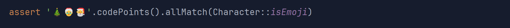
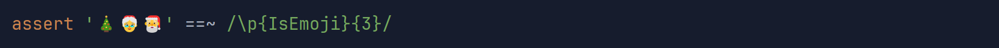
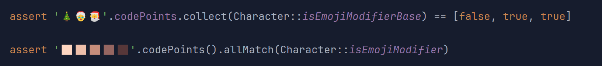
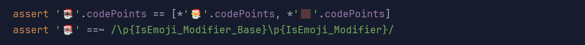
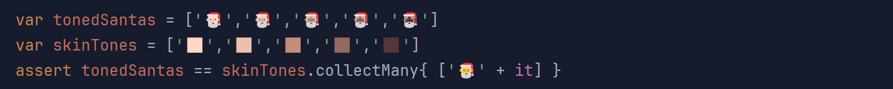
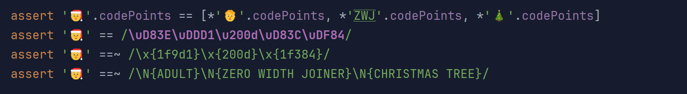
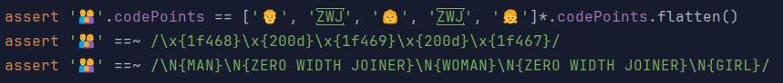
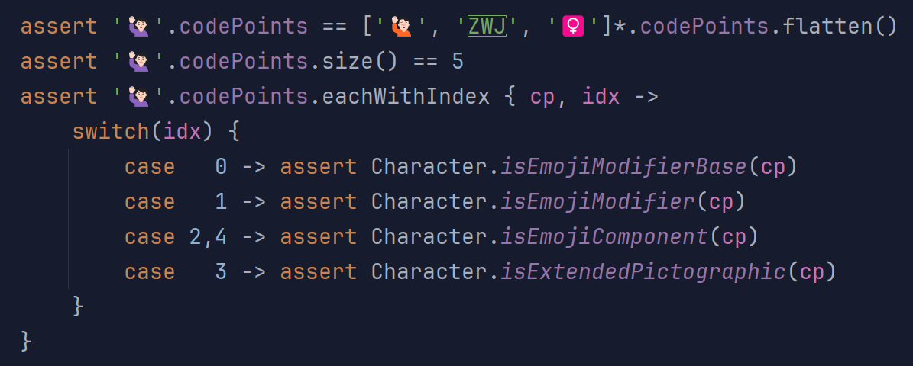
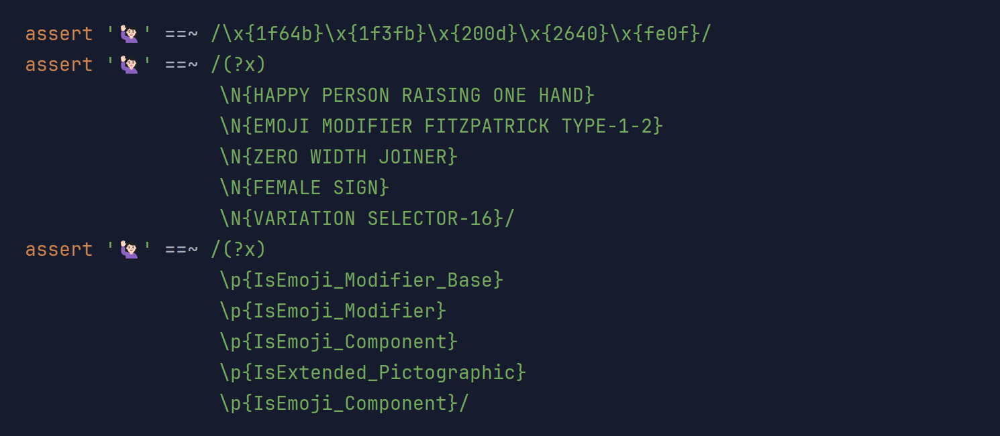

Season’s Greetings with Emojis
Author: Paul King
Published: 2023-12-23 12:24PM (Last updated: 2024-01-19 10:15PM)
In a previous blog post we looked at a fun way to write a hello world script using Groovy and Emojis.
Let’s look at some of the additional emoji API calls available in JDK 21. We’re using Groovy 5.0.0-alpha-5, but most of the examples work as is with recent Groovy 4 versions. Groovy 5, adds one shortcut for making it easier to get to code points as an array.
JDK 21 New Features
As part of JDK-8303018, JDK 21 adds the following API calls to java.lang.Character:
public static boolean isEmoji(int codePoint)
public static boolean isEmojiPresentation(int codePoint)
public static boolean isEmojiModifier(int codePoint)
public static boolean isEmojiModifierBase(int codePoint)
public static boolean isEmojiComponent(int codePoint)
public static boolean isExtendedPictographic(int codePoint)Also added was equivalent functionality when performing regex matches using the following special binary properties:
-
\p{IsEmoji} -
\p{IsEmoji_Presentation} -
\p{IsEmoji_Modifier} -
\p{IsEmoji_Modifier_Base} -
\p{IsEmoji_Component} -
\p{IsExtended_Pictographic}
Let’s have a look at using these features from Groovy.
Playing with Emojis with Groovy
First, we’ll have a look at a String containing 3 emojis: a Christmas tree, Mrs Claus, and Santa Claus. We’ll check that the 3 Unicode code points for that String all correspond to emojis using one of the new API calls:

We can check using the newly added regex binary properties as well.
The Groovy regex operator (==~) ensures that the String exactly matches 3 emojis:

Unicode supports various forms of modification by sequencing Unicode characters. One of the simplest examples is when some "base" emoji character is followed by a skin-tone emoji modifier. The two consecutive characters are re-interpreted, resulting in a single emoji with skin tone.
We’ll see that the Christmas tree cannot be used as an emoji modifier base, but the two Claus emojis can. Also, we can see that all 5 skin tone emoji characters can be used as emoji modifiers:

Let’s try some combinations. We’ll combine the Santa emoji with some of the skin tones. Depending on your IDE/editor, you’ll probably see a single emoji, but it is made up of multiple Unicode code points.
If we look at the code points from the "single" emoji, it will be the same as the "bare" Santa emoji plus the code points from the skin tone emoji:

We are also checking the emoji roles using a regex. We can see the base followed by the modifier.
We can put all this together to check all five toned Santas as follows:

Another sequencing trick offered by Unicode is to combine related emojis to form new ones with an intervening zero width joiner (ZWJ). For example, you might combine the woman emoji, "👩", possibly with an additional skin tone emoji, then a ZWJ character (Unicode 200D in hex), followed by the rocket emoji "🚀", which combined gives a female astronaut emoji "👩🏽🚀".
Unicode has a special Mx Claus emoji which can be used to represent a gender-neutral alternative to Mrs Claus or Santa Claus, or to indicate a person with strong Christmas spirit. It combines the adult emoji, "🧑", the ZWJ character, and the Christmas tree emoji.
Again if we look at the code points, the code points for the "combined" emoji is just the code points of the individual components one after the other, as we see on the first line. The second line shows how to enter the combined emoji using Unicode. The first and last parts are represented as surrogate pairs which are combined into the correct code points automatically.

The last two lines show checking the combined emoji with regex.
We can check the exact Unicode characters using regex’s \x{…} notation,
noting that we don’t use surrogate pairs. We can also check the
emoji names using the \N{…} notation.
Combinations aren’t limited to size two. One of the possible "family" emoji combinations combines 3 emojis, with interleaved ZWJ characters.

We can do similar regex checks as previously, checking the exact Unicode values or the names.
As a final example, let’s look at the "🙋🏻♀️" emoji. Looking at the first line of code below might lead us to think we have combined three characters, but checking the size shows there are 5 parts to the combined emoji. The first and last emojis are already combinations. The "🙋🏻" emoji combines a base emoji with a skin tone. The "♀️" emoji combines the female sign character "♀" with a special variation selector character, which indicates that the previous character should be treated as an emoji rather than a character.

We can put the new emoji API calls through their paces by checking various properties for each part of the combined emoji.
We can do similar checks using regex. We can check for an exact match of the Unicode characters exactly, by their emoji names, or by role each part plays as shown below:

We hope you have enjoyed this little exploration of the new JDK 21 emoji features.
Oh yes, and Season’s greetings everyone 🎄🎅☃️🎁🌟🎉!